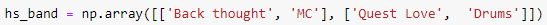

NUMPY ARRAYS

The shape of this variable is (2, 2) where the first number is the number of rows and the second is the number of column.
Using a method called .reshape(), we could modify the shape into something else.

But it can't when the array shape is already been reshaped from the start.
Printing the columns
To Print the columns, the syntax to use is variable[:, 0], where 0 is the column index you want to be printed.